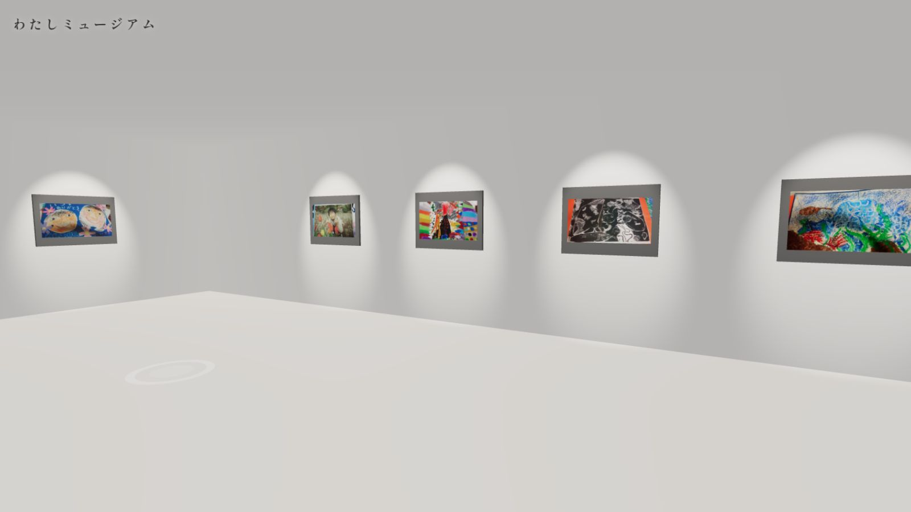

Web Archive /
Identity
わたしミュージアム
わたしミュージアム
Silent
Archive
子どもや本人の作品・思い出を「捨てないで残す」デジタルアーカイブ。
後から見返して「自分を内省」したり、参観日などで見れなかった家族に届けるための場所です。

1 ユーザーと役割
作り手（本人）
作品を撮影して登録、簡単な「ふりかえり」を記録します。
家族・閲覧者
作品をいつでも鑑賞し、応援コメントを送れます。
管理者（先生）
クラス展示の作成や、公開範囲の安全管理を行います。
2 使い方：閲覧者（見るだけの人）
作品ページへの入り方
共有されたQRコードやURLを開くと、作品単体ページが表示されます。
鑑賞とコメント
作品画像、作者の「ひとこと」、制作日などが見られます。
コメント例：「色が好き」「ここがすごい」
※ 承認制の設定も可能です。
3 使い方：作り手（作品を登録する）
A. 作品登録の流れ
- 「作品を追加」ボタンを押す
- 写真をアップロード（複数枚OK）
- タイトル・タグ（図工、作文など）を設定
- 公開範囲を選ぶ（自分だけ / 家族だけ / 公開）
B. ふりかえり（内省）
続ける負担にならないよう、選択式＋短文で記録します。
① 気分は？ 😊 / 😐 / 😣
② こだわり 選択肢から選ぶ...
③ 次の目標 一言入力
※ 後から見返すことで、自分の成長を感じられます。
管理者・運用の方へ
コレクション（展示室）機能
「2026年度 3年生作品展」のような括りで作品をまとめられます。
URLひとつでクラス全員の作品を保護者に共有可能です。
安全管理のコツ
- 名前はニックネーム推奨
- 顔写真は載せないルール作り
- 位置情報はOFF設定
- コメントは承認制を推奨